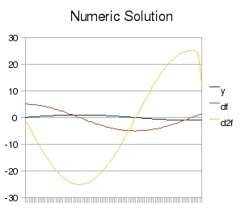
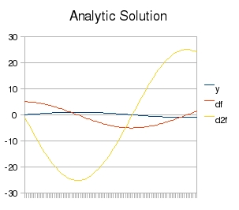
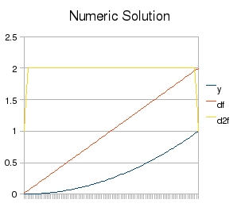
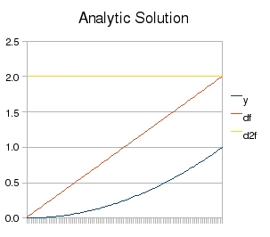
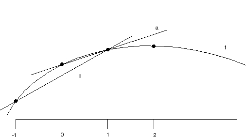
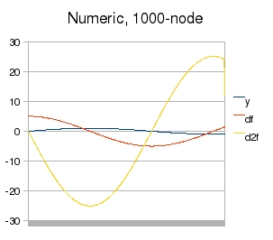

| Application version | 3.0 |
| Application licence | BSD |
| Trad4 version | 3.0 |
| Document version | 3.0 |
| Author | schevans |
| Date | 23-06-09 |
In this model we'll be applying trad4 to the problem of ordinary differential equations, again using numerical methods in a similar vein to heat_equation_1d. We'll define a function, and get the first and second order differentials of that function.
The diagram below shows the curve f and two lines a and b.
First, we're going to find the first differential at point x=2. This can be approximated using the centred difference method which gives us the slope of line a. This is given by:
df = ( f(x3) - f(x1) ) / ( x3 - x1)
The first differential at point x=0 can be approximated by the forwards difference method which gives us the slope of line b. The forward difference method is less accurate than the centred difference method for reasons discussed below, but for now, this is given by:
df = ( f(x1) - f(x0) ) / ( x1 - x0)
The first differential at the last point on the curve (not shown) is given by the backwards difference method. This is not show on the above diagram as it's essentially the same as the forwards difference method.
Now we're going to walk through how a 10-node implementation works. First we need to define our 10 f-objects. We start in the calculate_f function where we first derive our x-values from their object id, and these run from 0.1 to 1.0. Next the y-values are derived, and for this we're using the default y = sin(5x).
| id | 1 | 2 | 3 | 4 | 5 | 6 | 7 | 8 | 9 | 10 |
| x | 0.1 | 0.2 | 0.3 | 0.4 | 0.5 | 0.6 | 0.7 | 0.8 | 0.9 | 1 |
| y | 0.479426 | 0.841471 | 0.997495 | 0.909297 | 0.598472 | 0.14112 | -0.350783 | -0.756802 | -0.97753 | -0.958924 |
Next, we move on to the df objects. The published values of these objects are the first derivative of f (given analytically as y = 5cos(5x)), and are given by the foreward and centred difference methods described above:
| id | 11 | 12 | 13 | 14 | 15 | 16 | 17 | 18 | 19 | 20 |
| df | 3.62045 | 2.59035 | 0.339132 | -1.99511 | -3.84089 | -4.74628 | -4.48961 | -3.13373 | -1.01061 | 0.186058 |
Finally we add our third tier d2f. This applies the same forward and centred difference methods, but applied to df rather than f. This gives us our second derivative (given analytically by y = -5*5sin(5x)):
| id | 21 | 22 | 23 | 24 | 25 | 26 | 27 | 28 | 29 | 30 |
| d2f | -10.3011 | -16.4066 | -22.9273 | -20.9001 | -13.7558 | -3.24363 | 8.06271 | 17.395 | 16.599 | 11.9667 |
We can see this working using spot-checks. Take the full data set of this run:
| x | 0.1 | 0.2 | 0.3 | 0.4 | 0.5 | 0.6 | 0.7 | 0.8 | 0.9 | 1 |
| y | 0.479426 | 0.841471 | 0.997495 | 0.909297 | 0.598472 | 0.14112 | -0.350783 | -0.756802 | -0.97753 | -0.958924 |
| df | 3.62045 | 2.59035 | 0.339132 | -1.99511 | -3.84089 | -4.74628 | -4.48961 | -3.13373 | -1.01061 | 0.186058 |
| d2f | -10.3011 | -16.4066 | -22.9273 | -20.9001 | -13.7558 | -3.24363 | 8.06271 | 17.395 | 16.599 | 11.9667 |
First we'll look at the green cell. According to the centred difference formula, this is given by:
df = ( 0.909297 - 0.841471 ) / ( 0.4 - 0.2 ) df = 0.339130
Next,the yellow cell which uses the forward difference method, which means that d2f is given by:
d2f = ( 2.59035 - 3.62045 ) / ( 0.2 - 0.1 ) d2f = -10.301000
Lastly we'll check the blue cell, which uses the centred difference method again:
d2f = ( -1.01061 - -4.48961 ) / ( 0.9 - 0.7 ) d2f = 17.395000
The small differences you see are because the tabular output above is the result of 32-bit floating point calculations whereas we've taken the rounded output to plug into the three worked examples above.
The monitor is not shown.
static
int mode
pub
double x
double y
The mode switch is just to allow you to switch between the two demo functions without having to recompile. Arguably it shouldn't exist on every f-object but on a singleton data_server. See the Usage section below for how to use this.
sub
f f_down
f f_this
f f_up
pub
double df
double dx
The pub element dx is described as a pass-through above. This is required as d2f needs to know the step-size of the f of which it's finding the second differential. While it's theoretically possible for d2x to read x directly from f (by using another level of indirection of the kind used in the sub macros) this is not formally supported - any object only has access to the data of objects to which it directly subscribes. For this reason dx has to copy x and publish it to d2f unmolested. This is known as a pass-through.
sub
df df_down
df df_this
df df_up
pub
double d2f
sub
f my_f[NUM_NODES]
df my_df[NUM_NODES]
d2f my_d2f[NUM_NODES]
For this section we're switching to a 100-node graph. This will provide smoother curves, but not too smooth as we'll see in the next section.
The full 100-node data set is available here.
 
You'll notice a glitch at the end of the numeric d2f graph. This is down to the fact the forwards/backwards difference methods are not as accurate as the central difference method. This will be discussed in the next section.
The full 100-node data set is available here.
 
You'll see the same glitch at the start and end of the d2f graph - discussed further below.
We're now going to look at where those glitches at the edges come from, why the forwards/backwards difference methods produce these artifacts and why there's nothing we can do about it.
Firstly, you might wonder why only d2f is affected. The answer is it's not - df has this artifact too, it's just not as visible when looking at the graph. Take a look at the right-hand end of the 100-node data for the sin(5x) function. You can see the df error in yellow, and the d2f errors in green and blue:
| x | .. | 0.940000 | 0.950000 | 0.960000 | 0.970000 | 0.980000 | 0.990000 | 1.000000 |
| y | .. | -0.999923 | -0.999293 | -0.996165 | -0.990547 | -0.982453 | -0.971903 | -0.958924 |
| df numeric | .. | -0.061918 | 0.187932 | 0.437313 | 0.685600 | 0.932173 | 1.176420 | 1.297880 |
| d2f numeric | .. | 24.977300 | 24.961500 | 24.883400 | 24.743000 | 24.540900 | 18.285300 | 12.146300 |
| df analytic | .. | -0.061943 | 0.188011 | 0.437495 | 0.685886 | 0.932562 | 1.176907 | 1.418311 |
| d2f analytic | .. | 24.998081 | 24.982320 | 24.904115 | 24.763663 | 24.561315 | 24.297577 | 23.973107 |
| df diffs | .. | 0.000025 | -0.000079 | -0.000182 | -0.000286 | -0.000389 | -0.000487 | -0.120431 |
| d2f diffs | .. | -0.020781 | -0.020820 | -0.020715 | -0.020663 | -0.020415 | -6.012277 | -11.826807 |
Take a look at the curve below. This looks at the start of an arbitrary graph but as already explained the problems at the start and the ends are identical. As above we have a curve f, and two lines a and b. We're trying to find the slope of the curve at x=0.
The actual method used - the forward difference method - corresponds to the slope of line a. If the imaginary x=-1 point existed we could use the centred difference method which would give us the slope of line b. Looking at this we can see that b gives us a better approximation of df(0), but the problem is that the point x=-1 doesn't exist as we're only given the curve from 0 onwards - for all we know the function could be discontinuous for x < 0. So short of any complex curve extrapolation we are forced to use the forward difference method which we can see gives us a less good approximation of df(0).
I hope that explains why we're forced to use the less-accurate forwards/backwards method at the ends of the graph. The next thing we need to understand is a) why this error propagates inwards for d2f (i.e. the blue and green cells in the table above) and b) why the d2f curve for x_squared shows such a marked jump at both ends.
The reason this error propagates inward is because the green cell subscribes to the yellow one and the yellow one has the error, the error is propagated. The blue cell has two problems - it also subscribes to the yellow cell but it also suffers from the backwards difference error, which explains why it's error is greater than the green cell.
The reason the d2f error is so marked for the graph x_squared is that the underlying curve (df) for which we're trying to find the derivative is (or should be, analytically) a linear slope. As it's not, due to the 1st order problem described above, the d2f curve which says "there is no rate of change in df" actually does see a rate of change for the first and last elements due to the forwards/backwards error, and for this reason, plus the propagation issue, it shows a marked jump.
Apologies if you think I've laboured this point but it took me a long time to figure out what was happening here and convince myself that these errors weren't due to bugs in my code, and I wanted to save you the trouble.
The error across the first derivative is a known quantity of the finite difference method and is proportional to the step-size squared, so the smaller your step size (i.e. the greater NUM_NODES) the better approximation you get. Below, an abridged table showing the sin(5x) data for a 1000-node graph where you can see that the diffs are smaller compared to the 100-node graph above. The full 1000-node outputs for sin(5x) and x_squared are on-line.
| x | 0.00100000 | 0.00200000 | 0.00300000 | 0.00400000 | 0.00500000 | .. | 0.99600000 | 0.99700000 | 0.99800000 | 0.99900000 | 1.00000000 |
| y | 0.00499998 | 0.00999983 | 0.01499944 | 0.01999867 | 0.02499740 | .. | -0.96440536 | -0.96307117 | -0.96171290 | -0.96033059 | -0.95892428 |
| df numeric | 4.99985417 | 4.99972917 | 4.99941668 | 4.99897920 | 4.99841675 | .. | 1.32213573 | 1.34622914 | 1.37028889 | 1.39431438 | 1.40631849 |
| d2f numeric | -0.12499766 | -0.21874395 | -0.37498281 | -0.49996250 | -0.62492969 | .. | 24.10993310 | 24.07657860 | 24.04262220 | 18.01480050 | 12.00410740 |
| df analytic | 4.99993750 | 4.99975000 | 4.99943751 | 4.99900003 | 4.99843758 | .. | 1.32214124 | 1.34623475 | 1.37029460 | 1.39432019 | 1.41831093 |
| d2f analytic | -0.12499948 | -0.24999583 | -0.37498594 | -0.49996667 | -0.62493490 | .. | 24.11013404 | 24.07677927 | 24.04282259 | 24.00826483 | 23.97310687 |
| df diff | -0.00008333 | -0.00002083 | -0.00002083 | -0.00002083 | -0.00002083 | .. | -0.00000551 | -0.00000561 | -0.00000571 | -0.00000581 | -0.01199244 |
| d2f diff | 0.00000182 | 0.03125189 | 0.00000312 | 0.00000417 | 0.00000521 | .. | -0.00020094 | -0.00020067 | -0.00020039 | -5.99346433 | -11.96899947 |
Below, the graph for the 1000-node data set. You can see the backwards error still exists but for a much smaller part of the graph.
The default distribution is set up with a 100-node graph and y = sin(5x). You can switch between sin(5x) and x_squared by toggling the mode var on f:
$ t4db SQL> update f set mode=1;
And then send the reload signal (there's no need to restart):
$ send_reload.sh
If you want to try a different function, modify the calculate_f function in f.c as appropriate, recompile and restart:
calculus$ make calculus$ calculus
If you want to change the x-range, again modify the calculate_f as appropriate, recompile and restart.
The need_refresh function in the trad4 internals explicitly lists each object to which any type subscribes. This has worked well until now, but presents a problem with the monitor and big graphs. As the monitor subscribes to 3*NUM_NODES objects (as there are 3 tiers), big graphs, for example NUM_NODES=10k, mean a massive need_refresh function as 30k objects are listed in this function by the precompiler. This means for a long compile time and a big binary - monitor.o is 3MB for 10k nodes whereas the rest of the object files weigh in at a few KB.
This doesn't actually affect run-time performance as because every object to which the monitor subscribes will have changed, lazy evaluation kicks in so only the first object needs to be tested. It's almost certainly the compiler resolving the implication of the lazy evaluation that takes it so long and makes the binary so big.
Should you need the 3rd differential or above it's pretty trivial to add another tier.
Due to a limitation in the current trad4 infrastructure, if you want to run against the 10 or 1000 node data sets you'll have to set the value of NUM_NODES in calculus/src/constants.t4s as appropriate, run the precompiler and recompile:
heat_equation_1d$ t4p heat_equation_1d$ make all